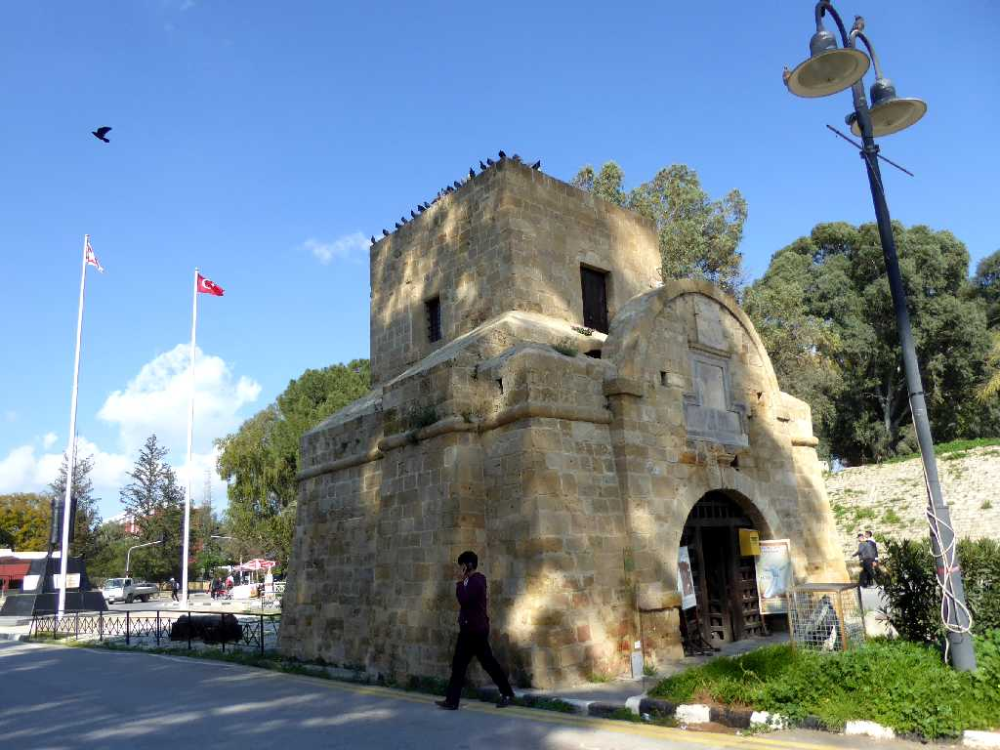
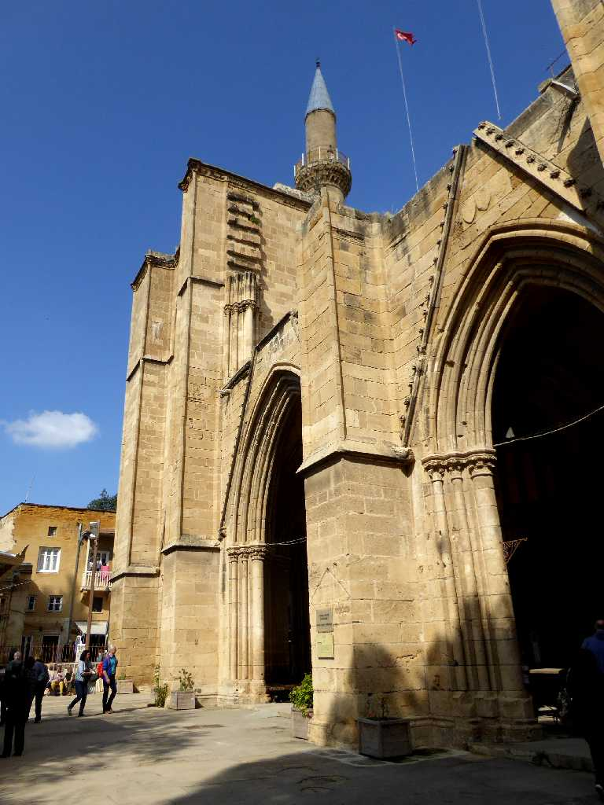
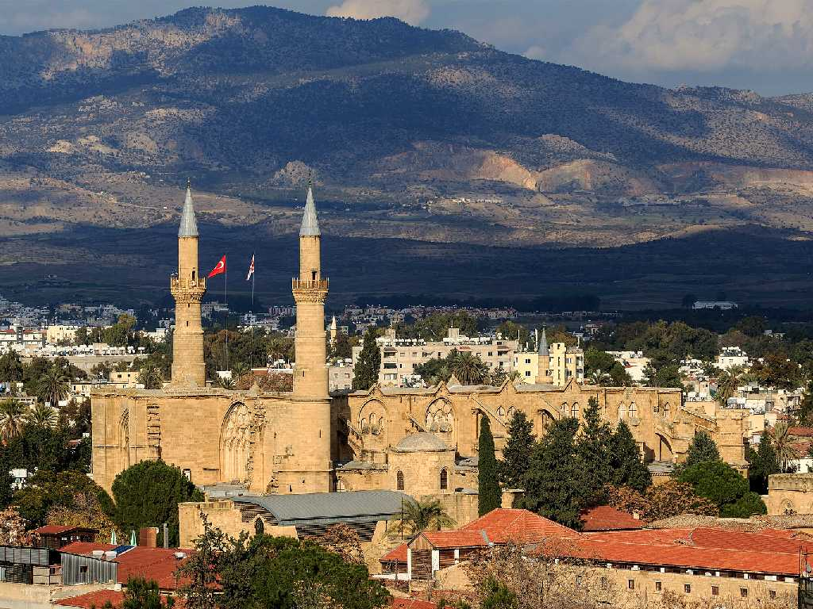
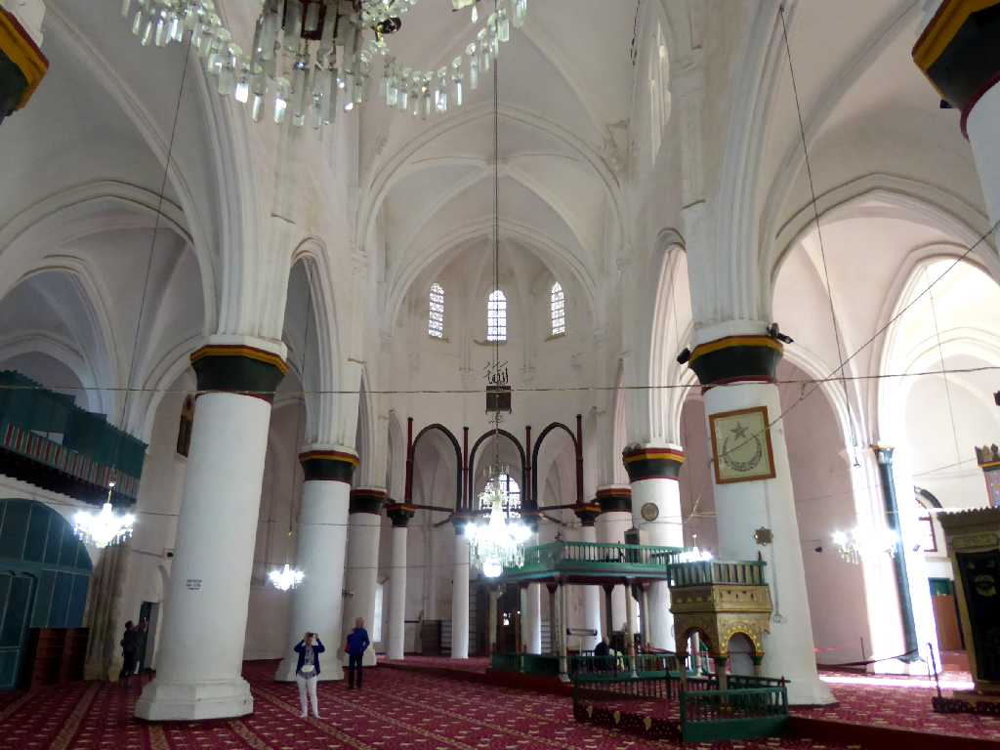
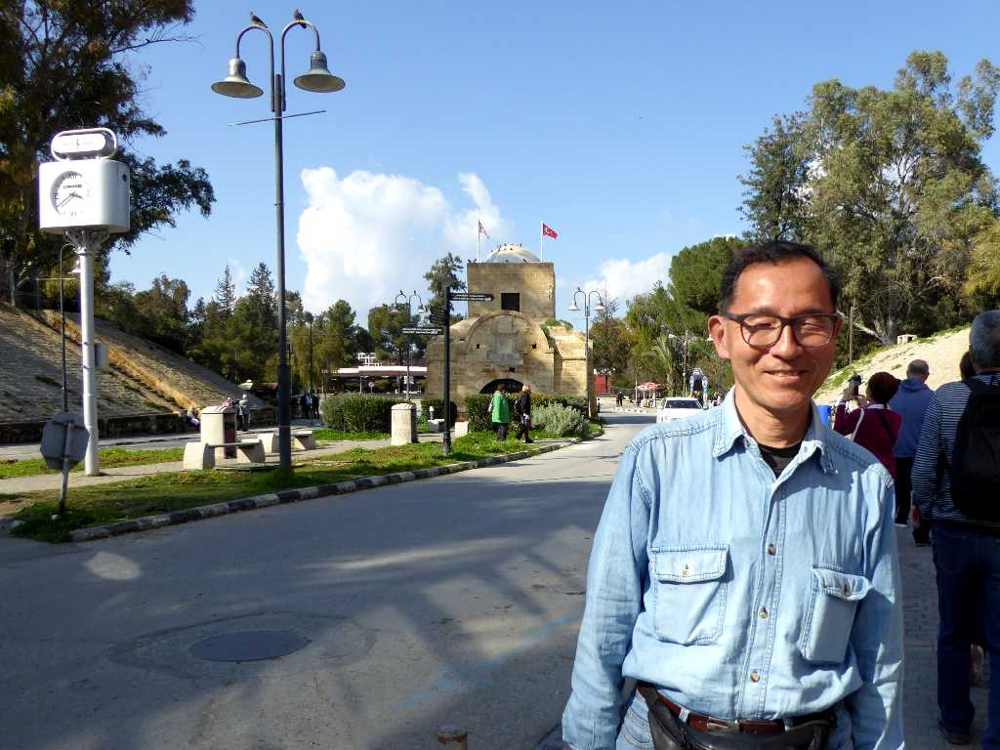

Kyrenia Gate Lefkoşa(Nicosia)
１６世紀のヴェネチア時代に創られた城壁にある三つの門のうちニコシア旧市街の北側に位置するキレニア門
 
Selimiye Camii St. Sophia Cathedral Lefkoşa(Nicosia)
１２０８年に創られた聖ソフィア大聖堂を改修したセリミエモスク

Selimiye Camii Lefkoşa(Nicosia)

March 7 2019 Kyrenia Gate Lefkoşa(Nicosia)